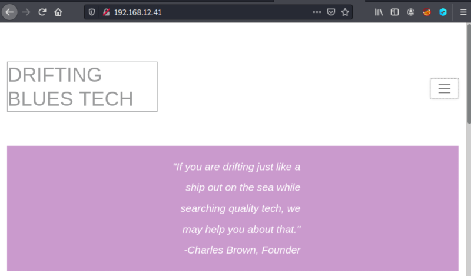
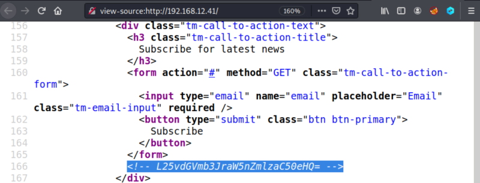
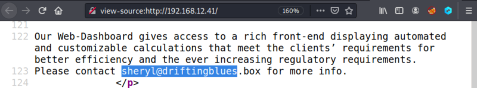
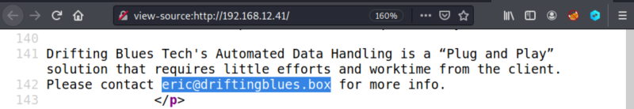
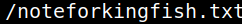

3. Enumerate
1. Visit http://192.168.12.41/.

Apparently, there isn't anything interesting here.
2. View the page source.



You'll find:
• A comment that can be interesting.
• Two email accounts: sheryl@driftingblues.box, eric@driftingblues.box.
So the domain is “driftingblues.box" and there are two users: sheryl and eric.
3. Decode the comment. It seems “base64”.
$echo L25vdGVmb3JraW5nZmlzaC50eHQ= | base64 -d
Output:

4. Add the domain to your Kali Machine “/etc/hosts/ file the line ”192.168.12.41 driftingblues.box".
$sudo nano /etc/hosts